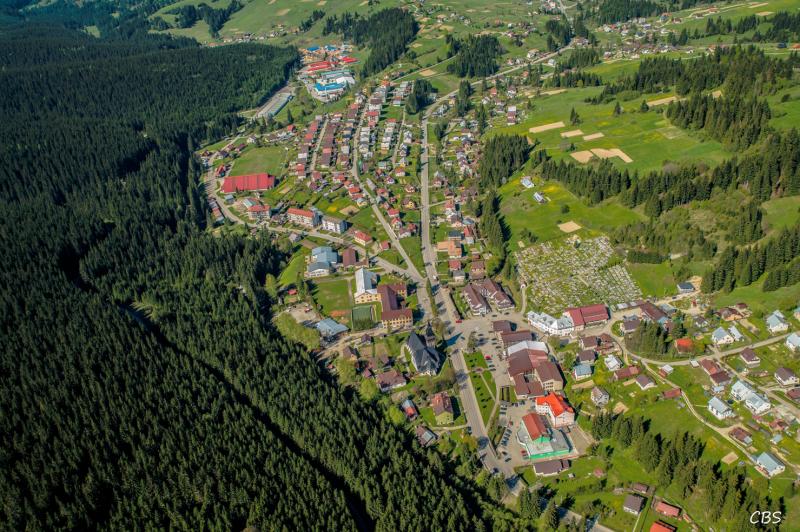

O Oravskej Lesnej
Vitajte na stránkach venovaných obci Oravskej Lesnej. Tu sa môžete dozvedieť viac o jej histórii, atrakciách a prírode.

Oravská Lesná zvrchu
Vitajte na stránkach venovaných obci Oravskej Lesnej. Tu sa môžete dozvedieť viac o jej histórii, atrakciách a prírode.
Oravská Lesná zvrchu